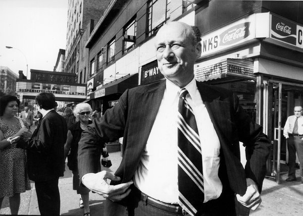

Picking’s are slim out there for pics of the New Yorker movie theater, on 89th and Broadway. But I found these two gems. The first pic – looking uptown on the west side of Broadway – is a little before my time, but shows the sign for Lynn Oliver’s studio just above the marquis. Lynn was a great musician, and his little rehearsal studio was a hub for NYC jazz artists.
The second pic – looking downtown – shows the honorable Ed Koch in the foreground, but more importantly shows Benny’s Hot Dogs just behind Ed. The place was disgusting, and the aforementioned Benny would occasionally chase people out of his shop with a butcher’s knife, but the hot dogs were cheap and hit the spot.